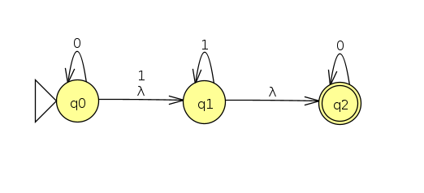
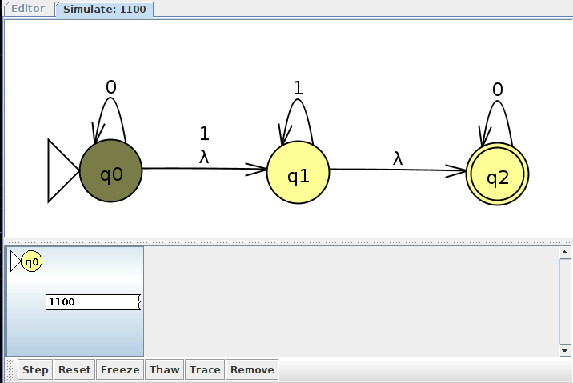

Week 3: Introduction To NFAs
Chris Tralie
Nondeterministic Finite Automata (NFAs)
We will now introduce a generalization of DFAs called Nondeterministic Finite Automata (NFAs). The idea here is that we can have more than one arrow with the same symbol coming out of a state, or none at all. We will also look at a variant with a special symbol called λ that clones the machine in a different state without seeing a character. The machine is "nondeterministic" because it clones itself into a sort of "parallel universe" situation to explore multiple paths in parallel, and it can keep branching. If one or more branches ends up persisting to an accept state, then we consider the NFA to have accepted a language. Let's look at an example
NFA Example 1: 1 in The 2s Place
We'll create an NFA that accepts a binary string that, when read from left to right, has a 1 in the 2s place. Below is a picture of an NFA that accomplishes this (Click here to download the JFLAP file)

Let's consider the input 11010. We know by looking at it that it does indeed have a 1 in the 2s place. But what does the NFA do? We can keep track of the branching using a tree that follows the different possibilities as new characters are read:

Notice how when we are at a state that has multiple arrows coming out of it for a particular input, we branch off into each possibility. Also, as soon as we reach a dead end, a particular path dies off. In this case, the only path that survives until the end is the one that stays at q until the 4th character comes in, when it jumps to q2 and then q0, which is an accept state. Since it ends at an accept state in at least one clone, the string is said to be accepted by the machine.
We can interpret the above machine as taking a gamble on when it's actually reading the 2s place. If it's reading the 2s place and it sees a 1 as it should, it jumps from the start to q2. If it hasn't read the 2s place yet, it stays at q regardless. We can see that the rightmost branches in the above evaluation guessed incorrectly that they were in the 2s place, and this is what caused them to die off when they had more characters than anticipated.
You can also explore NFA evaluations in JFLAP by stepping through, as shown below for this example

Formal Definition of NFAs
With the above example in mind, let's see if we can now come up with a formal definition for NFAs and NFA acceptance, given the analogous definitions for DFAs and DFA acceptance, respectively.
- Q: A set of all of the states in the NFA
- Σ: A set of all characters in the alphabet
-
δ: A function describing the arrows in the diagram. The function is of the form
where P(Q) is the power set of Q, or the set of all subsets of Q (including all of Q and the emptyset). In other words, like a DFA, the input to the function is a tuple of (state, character), but this time, the output is a set of states.
\[ \delta: Q \times \Sigma \to \mathcal{P}(Q) \]
- q: The start state
- F: A set of the accept states or "final states"
You'll notice looking at this that the only difference is the \delta; function, which captures the idea that we can have multiple outgoing characters through the same arrow, or none at all.
Let's see how we'd tweak the definition of acceptance for an NFA now
- r0 = q
-
\[ r_{i+1} \in \delta(r_i, w_i+1) \]
- rn is in F
The only difference between this and DFA acceptance is that ri+1 has to be only one of many possibilities of the output of δ(ri, wi+1). It's also worth nothing that there may be multiple sequences that take us to acceptance, while there is exactly one sequence in a DFA that gets us there. Though in both definitions, it's sufficient to say "there exists a sequence."
NFA Example 2: λ Arrows
Let's spice up our NFAs now by adding one more type of nondeterministic transition: the λ transition (NOTE: Sipser and many others call this an ε-transition, but I'm sticking with what JFLAP uses). What λ means is that, even before we see a new character, a machine can clone itself along the arrow. Consider the example below (Click here for the JFLAP file). As you will see, this is a bit of a silly example, because it's a complicated way of designing an NFA that accepts every binary string. But it will allow me to demonstrate some interesting branching behavior.
Here's a diagram depicting a simulation of the NFA with machine cloning for the input 0011. We'll depict λ transitions as horizontal arrows, and we have to recursively clone along all horizontal arrows before we parse the next character:
Notice how in this example we clone to two states before parsing the next character if we happen to be at q0, since we clone to q1, and then q1 clone itself to q2. The DFA ends up accepting, as there is at least one clone of the machine that ends up in an accept state.
Here's how JFLAP would show us all of these clones as we interactively step through the input. Notice how we have up to 5 machine clones at one point, as depicted in the above trace.
NFA Example 3: A Union
Let's see a more useful application of the λ transiton now that doesn't just accept everything. We'll go back to the union example from last time and see how we can do the same thing more simply with an NFA with λ transitions. Recall that a machine that recognizes binary strings with at most 1 one looks like this:

and a machine that recognizes an odd number of zeros looks like this

We used the cartesian product to create a DFA to recognize both

But we can express the union in an even more intuitive way if we use the λ symbol, which starts a branch that jumps to the next symbol without any input, as shown below (Click here to view the JFLAP file)

Below is a trace for the input 00011. We see it branches right away and explores both machines in parallel. In this case, they both happen to accept, though only one of them has to accept

Below is what such a parallel exploration looks like in JFLAP

Reducing NFAs with λ To Ordinary NFAs
It may seem that by introducing the λ symbol, we're adding a capability to NFAs that we didn't have before. But actually, we can reduce any NFA with a λ symbol to an ordinary definition as per our formal definition of NFAs, which does not include λ symbols. That is, for any NFA with λ symbols, we can construct an NFA without λ symbols that recognizes the same language.
Proof: Given an NFA M = (Q, Σ, δ, q, F) with λ transitions, construct an NFA M' = (Q, Σ, δ', q, F), where the transitions δ' are as follows:
- Include all non-λ transitions in the original NFA in δ
-
If a state q has a λ transition in M, gather into a set P all states that can be reached from q in M by a sequence of λ arrows. Then, for all non-λ arrows δ(p, c) = r, for all p in P, create a transition
\[ \delta'(q, c) = r \]
- If we can reach an accept state from a state s by a sequence of λ transitions, add s to the set of accept states.
In other words, add arrows to M' that simulate the effect of going along a sequence of λ transitions and then following the appropriate character where those λ states end up. This new λ-less NFA will accept the same language as the original NFA.
Example of λ to non-λ reduction
The example below shows such a construction. The blue arrows represent the λ transitions, while the red arrows represent the arrows that would replace them after the above conversion. The machine with the blue arrows alone is equivalent to the one with the red arrows alone. As a few examples:
- If we're at q1 and we see a 1, we can do a lambda transition to q2 and then follow the 1 back to q1. Or, we can follow the red arrow directly from q1 to q1
- If we see an input of "0" at q0, we can follow three lambda transitions to get to q3, then follow the 0 to stay at q3. Or, we can take the red arrow directly from q0 to q3
- q0 and q1 both become accept states, as they can jump to the accept state q2 via a sequence of λ transitions.
Since they're of equal capability, from now on, we'll stick to the simpler definition whenever we need to prove something about NFAs, but we'll use λ as a practical tool for specific examples when we it helps to make them clearer. As we can see in the above diagram, this often leads to a more parsimonious specification of the automaton.
Reversing Regular Languages
Speaking of specific examples, NFAs with λ transitions give us a nice tool to design machines that recognize the reverse of particular languages if we're given a DFA for the original language. If the original DFA accepts a string s0 s1 s2 ... sm, then this means that there is a sequence of states q, q0, q1, q2, ..., qm that is compatible with the string, where qm is an accept state. Were we to visit the string in reverse, we would visit the states in reverse, starting at qm and ending at q. What this means is that we should take the following steps to devise an NFA that accepts the reverse string:
- Reverse all of the arrows
- Make the start state the accept state (since this is where we want to end for the reverse string)
-
If there's only one end state in the original DFA, make this the start state in the reverse DFA.
Otherwise, if there are multiple end states, we have to think a little harder, because, like a DFA, an NFA only has one start state. We're also not sure which end state a particular string in the original language would have accepted on. So we create a dummy start node in the reverse that branches to all of the original end states with a λ
Let's look at a couple of examples to see how this works
Reversing Example 1
Let's recall the DFA that accepts strings that contain a 01:

Here's what we get if we follow the above recipe (Click here to view the JFLAP file)

We can see right away it's an NFA and not a DFA, because p01 has two arrows coming out for a 1 input, and p0 has two arrows coming out for a 0 input. The new accept state, p, will also kill off any branches that have a 0 on them.
Reversing Example 2
Let's consider a DFA that recognizes the languages of strings over Σ={a, b} that do not contain the substring ba. The DFA below accomplishes this (Click here to view the JFLAP file)

If we follow the recipe to reverse the arrows, we get the following (Click here for the JFLAP file)

This is an example where the original DFA had multiple accept states, so we needed to be able to start the reverse at any of them. We accomplish this by including a dummy start state that immediately branches to all of them with a λ.
Actually, we can simplify this a bit by noticing that it's impossible to reach the state q2 from any of the start states: